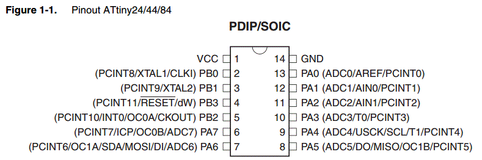
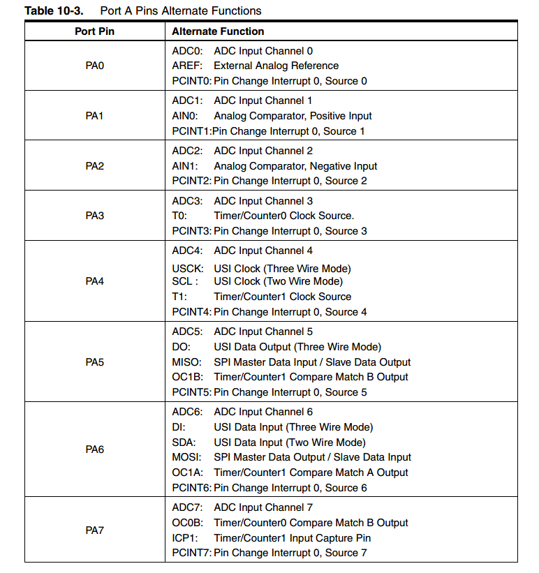
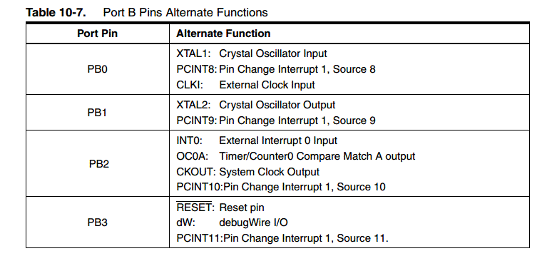

07. Embedded Programming
Reading the Datasheet
Considering how complex is the ATtiny44 datasheet i decided to make a syntesis here to speed up the comprehence and memorize better some features.
ATtiny 44
- One 8-Bit and One 16-Bit Timer/Counter with Two PWM Channels, Each
- 10 bit Analog to Digital (ADC): 8 are single-ended and 12 a differential. Here a breaf note about this two different signal:
WHEN TO USE SINGLE-ENDED OR DIFFERENTIAL INPUTS
Differential inputs provide a more stable reading when EMI or RFI is present, and therefore, it is recommended to use them whenever noise is generally a problem. This is especially true when measuring thermocouple, strain gage and Bridge type pressure sensor inputs, since they produce very small signals that are very succeptible to noise.
Single-ended inputs are lower in cost, and provide twice the number of inputs for the same size wiring connector, since they require only one analog HIGH (+) input per channel and one LLGND (-) shared by all inputs. Differential inputs require signal HIGH and LOW inputs for each channel and one common shared LLGND. Single-ended inputs save connector space, cost, and are easier to install. (Original link)
- analog comparator (not sure if with internal hysteresis or not)
- Internal calibrated oscillator (how relaiable?)
- working with 2.7V to 5.5V
- up to 20 MHz(5.5V)
- Low power consumtion
Here the Pinout:
  
To be remembered
- Port B is a 4bit bidirectional I\O port, with internal pull-up resistor (to "keep clean and stable" the voltage to the pin) with the reset pin (PB3)
- Port A is a 8bit bidirectional I\O port, with internal pull-up resistor. Port A has alternate functions as analog inputs for the ADC, analog comparator, timer/counter, SPI and pin change interrupt
- A watchdog timer (A watchdog timer or WDT is a hardware timer that automatically generates a system reset if the main program neglects to periodically service it. It is often used to automatically reset an embedded device that hangs because of a software or hardware fault)
- There are two types of interrupts, one is recording what's happening while the interrupt is on, the other is not. In the second case, if another interrupt accurs while the first one is on, and it goes off before the end of the first, it's not going to be triggered
- if an external clock is used, the CKSEL fuses is programmed to 0000
- Internal clock is approximately 8 MHz (to be calibrated)
- There is a low power clock (CKSEL fuses to 0100) at 128kHz (to be calibrated)
- The default clock source setting is therefore the Internal Oscillator running at 8.0 MHz
- The ports are bi-directional I/O ports with optional internal pull-ups resistors
- The DDxn bit in the DDRx Register selects the direction of this pin. If DDxn is written logic one, Pxn is configured as an output pin. If DDxn is written logic zero, Pxn is configured as an input pin.
- If PORTxn is written logic one when the pin is configured as an input pin, the pull-up resistor is activated.
- If PORTxn is written logic one when the pin is configured as an output pin, the port pin is driven high (one). If PORTxn is written logic zero when the pin is configured as an output pin, the port pin is driven low (zero)
- how to send the programm to the board
- the configuration of the board (clock, processor, etc.)
Programming the "hello world"
The first step to do is to write the make file. It contains all the information to programm the board. In particular:
Therefor it should be different for aech board, or at least edited. Here the code used (taken for the fabacademy archive)
PROJECT=hello.ftdi.44.echo
SOURCES=$(PROJECT).c
MMCU=attiny44
F_CPU = 20000000
CFLAGS=-mmcu=$(MMCU) -Wall -Os -DF_CPU=$(F_CPU)
$(PROJECT).hex: $(PROJECT).out
avr-objcopy -O ihex $(PROJECT).out $(PROJECT).c.hex;\
avr-size --mcu=$(MMCU) --format=avr $(PROJECT).out
$(PROJECT).out: $(SOURCES)
avr-gcc $(CFLAGS) -I./ -o $(PROJECT).out $(SOURCES)
program-bsd: $(PROJECT).hex
avrdude -p t44 -c bsd -U flash:w:$(PROJECT).c.hex
program-dasa: $(PROJECT).hex
avrdude -p t44 -P /dev/ttyUSB0 -c dasa -U flash:w:$(PROJECT).c.hex
program-avrisp2: $(PROJECT).hex
avrdude -p t44 -P usb -c avrisp2 -U flash:w:$(PROJECT).c.hex
program-avrisp2-fuses: $(PROJECT).hex
avrdude -p t44 -P usb -c avrisp2 -U lfuse:w:0x5E:m
program-usbtiny: $(PROJECT).hex
avrdude -p t44 -P usb -c usbtiny -U flash:w:$(PROJECT).c.hex
program-usbtiny-fuses: $(PROJECT).hex
avrdude -p t44 -P usb -c usbtiny -U lfuse:w:0x5E:m
program-dragon: $(PROJECT).hex
avrdude -p t44 -P usb -c dragon_isp -U flash:w:$(PROJECT).c.hex
After the make file I moved to "hello.ftdi.44.echo.C"
Helped by Daniele Ingrassia , I checked the code line by line, trying to understand as much as possible. It took him almost two hours to explain me everything. We went through all the funcions and i particular:
- the use of "*" to have a pointer instead of a variable
- how to use arrays
- always true conditions
- functions and void functions
- kind of memories usable
- kind of variables
- how to simulate the serial comunication on MC without and hardware one
#include <avr/io.h>
#include <inttypes.h>
#include <util/delay.h>
void delay_ms(uint16_t ms);
void init_io();
int button_is_pressed();
void toggle_led();
#define F_CPU 20000000UL /* 20MHz crystal oscillator */
#define BUTTON_PORT PORTB /* PORTx - register for button output */
#define BUTTON_PIN PINB /* PINx - register for button input */
#define BUTTON_BIT PB2 /* bit for button input/output */
#define LED_PORT PORTA /* PORTx - register for LED output */
#define LED_BIT PA7 /* bit for button input/output */
#define LED_DDR DDRA /* LED data direction register */
#define DEBOUNCE_TIME 25 /* time to wait while "de-bouncing" button */
#define LOCK_INPUT_TIME 250 /* time to wait after a button press */
int
main (void)
{
init_io();
while (1)
{
if (button_is_pressed())
{
toggle_led();
}
}
}
void delay_ms(uint16_t ms) {
while ( ms )
{
_delay_ms(1);
ms--;
}
}
void
init_io()
{
/* set LED pin as digital output */
LED_DDR = _BV (LED_BIT);
/* led is OFF initially (set pin high) */
LED_PORT |= _BV(LED_BIT);
/* turn on internal pull-up resistor for the switch */
BUTTON_PORT |= _BV(BUTTON_BIT);
}
int
button_is_pressed()
{
/* the button is pressed when BUTTON_BIT is clear */
if (bit_is_clear(BUTTON_PIN, BUTTON_BIT))
{
delay_ms(DEBOUNCE_TIME);
if (bit_is_clear(BUTTON_PIN, BUTTON_BIT)) return 1;
}
return 0;
}
void
toggle_led()
{
LED_PORT ^= _BV(LED_BIT);
}
To be honest I think I'm pretty far from coding something in C. I have a little bit of experience in Arduino and i think I'm going to improve that first.
I actually used the blink version of the hello world, to test the other version as well. After I uploaded the code i noticed it wasn't working and checking the board i noticed the LED was connected with inverted polarity. I decided to add a bigger one, and it was working perfectly.